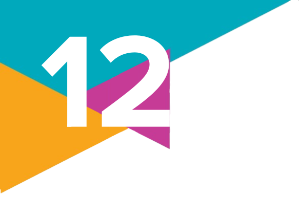
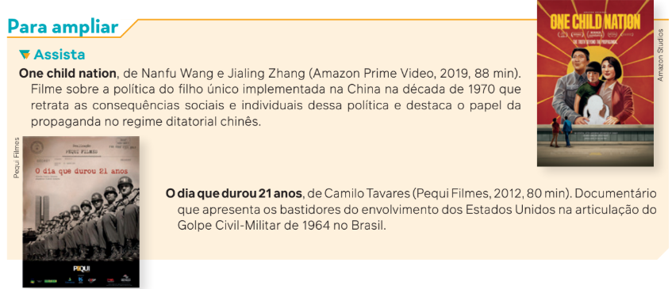

Estado
O mapa a seguir apresenta os países do mundo classificados de acordo com um índice de
democracia. Esse índice é baseado em cinco critérios estabelecidos pela empresa de pesquisas The Economist Intelligence: processo eleitoral e pluralismo; funcionamento do governo;
participação política; cultura política e liberdades civis. Com base na avaliação desses critérios,
os países são classificados em uma escala de 0 a 10: aqueles mais próximos de 0 são caracterizados como regimes autoritários, em que não há democracia; já aqueles mais perto de 10
seriam países onde vigoraria uma democracia plena.
De acordo com esse índice, o Brasil foi classificado como uma “democracia falha” em 2023.
Segundo a avaliação do relatório, apesar de o país ser muito bem avaliado pelo processo eleitoral íntegro e bem organizado, ele tem sido mal avaliado nos quesitos “funcionamento do governo” e “cultura política”. As ameaças às instituições democráticas, com o questionamento do
processo eleitoral, observadas após o resultado das eleições de 2022, contribuíram para que o
país caísse quatro posições no índice em relação a 2021, constando atualmente na 51a
posição
do ranking. Além disso, a forte polarização do debate político foi apontada como um fator que
contribui para a baixa pontuação do país no quesito “cultura política”.
Além de explorar mais os tipos de democracia existentes, neste capítulo vamos estudar os
sistemas e as formas de governo, bem como diferentes abordagens sobre o conceito de Estado.
A Ciência Política e as teorias sobre o Estado Moderno
No mundo moderno, o conceito de Estado é utilizado para definir como as sociedades se
organizam no aspecto jurídico, econômico e político. O Estado, hoje, é uma estrutura organizada que rege a vida em sociedade por meio de leis, ou seja, por meio da ordem jurídica. Já o
termo estado, com letra minúscula, representa uma unidade federativa do Brasil (como Pará,
Pernambuco, Paraná e Goiás).
Nós, que vivemos no Brasil, estamos submetidos ao poder de um Estado. Quando nascemos, nossos familiares têm que ir ao cartório registrar nosso nome em uma folha carimbada e
reconhecida pelo Estado. Junto da Certidão de Nascimento, adquirimos também o Cadastro de
Pessoas Físicas (CPF). Crescemos e tiramos o diploma escolar reconhecido pelo Estado. Desde
muito jovens, podemos ter Carteira de Identidade. Quando iniciamos um trabalho, podem ser
necessários a Carteira de Trabalho e um cadastro no Programa de Integração Social (PIS). Ou
seja, tudo para sermos reconhecidos pelo Estado.
A concepção de Estado Moderno resultou de um longo processo de centralização política
do poder da realeza, iniciado no final da Idade Média europeia. Desde então, o conceito passou
por muitas transformações até chegar à caracterização atual.
A ordem jurídica que determina o funcionamento do Estado é constituída por um leque de
normas aplicadas pelo Estado e reconhecidas, em geral, por todos os cidadãos.
O Estado compreende basicamente três funções:
• elaborar leis;
• administrar os serviços públicos e executar as leis;
• julgar a aplicação das leis, quando elas não estiverem sendo devidamente cumpridas.
O Estado é um dos temas centrais do campo de estudos das Ciências
Sociais definido como Ciência Política. O pensador considerado o
fundador desse campo na Era Moderna é o filósofo italiano Nicolau
Maquiavel (1469-1527). Suas reflexões datam da época do Renascimento,
inspiradas pelos ares que a sociedade respirava naqueles tempos e
influenciadas pela realidade de instabilidade política e fragmentação
territorial existente na Península Itálica, subdividida entre diversos reinos
e repúblicas independentes. Maquiavel assumiu uma postura até então
inédita em comparação com outros intelectuais conhecidos até aquele
momento: analisar a política tal como ela é, e não como ela deveria ser.
De acordo com Maquiavel, a instituição do Estado existe concretamente, e não deve ser idealizada. Daí deriva a tese presente em sua
obra principal, O príncipe (1532). Preocupado com a instabilidade que
reinava na região e com a natureza humana, Maquiavel dirigiu-se ao monarca que exercia o poder em Florença, com o objetivo de “aconselhá-lo” a
garantir politicamente a ordem e a estabilidade do poder sobre um território e uma população. Guiado pelo objetivo de manutenção do poder –
e consequentemente da ordem e da estabilidade da sociedade – e pelo
respeito dos governados, caberia ao governante sábio e virtuoso não se
apegar à moral vigente, e sim atuar de acordo com a necessidade. Para
isso, deveria agir com a devida sabedoria para resistir aos inimigos
e se manter no poder, comportando-se de forma adequada às circunstâncias que lhe fossem
exigidas, independentemente dos meios que precisasse utilizar nesse sentido. Essa ideia se
popularizou com a expressão “os fins justificam os meios” e deu origem ao adjetivo “maquia-
vélico” – que pode ser entendido como sinônimo de “astuto” ou “ardiloso”.
As teorias do contrato social
Assim como Maquiavel, o inglês Thomas Hobbes (1588-1679) estava preocupado com a
estabilidade política. Ele viveu na turbulenta Inglaterra do século XVII, no auge das monarquias absolutistas europeias – cuja maior referência histórica é Luís XIV, o “Rei Sol” da frase
“o Estado sou eu”. Hobbes defendeu a ideia de que a paz na sociedade somente seria possível
caso os indivíduos concordassem em se submeter a um poder absoluto e centralizado. Diferentemente dos teóricos que concebiam a origem divina do poder, Hobbes entendia o poder
como resultado de um acordo, um contrato social que regulasse a vida dos indivíduos em
sociedade – tal formulação levou à consolidação da teoria contratualista, ou contratualismo.
Como assim, um “contrato”? A existência desse contrato não significa que, diante de uma
realidade conflituosa, os seres humanos, por livre e espontânea vontade em determinado momento histórico, tivessem se reunido e decidido pela assinatura coletiva de um acordo que
decretasse a paz nas diversas sociedades. Vamos analisar o que Hobbes quis dizer com isso.
Para entender o pensamento desse filósofo, há
de se compreender sua leitura da natureza humana.
Hobbes concebia a existência de determina do
“estado natural”, no qual a humanidade vivia
uma realidade de medo de uns em relação aos
outros, pelo mal que um ou outro poderia causar
ou sofrer – daí deriva uma frase conhecida dele:
“o homem é o lobo do homem”. Entretanto, a realidade
permanente de escassez e o entendimento
de que cada um teria direito a obter o que quisesse levariam,
necessariamente, a uma luta constante de “todos contra todos”.
O fim desse estado
de guerra civil somente se tornaria possível com o
estabelecimento de um contrato que daria origem
à organização dos indivíduos em sociedades.
Capa da primeira
edição de Leviatã,
com ilustração
do artista francês
Abraham Bosse
(1604-1676).
O leviatã é uma criatura mitológica,
representada na imagem como a
autoridade estabelecida pela união
de todos os indivíduos.
Essa forma de organização social, na concepção de Thomas Hobbes, seria o Estado, que deveria ser comandado por uma autoridade à qual
todos livremente se submetessem sem qualquer
questionamento. Essa é a tese central de sua obra
principal, Leviatã (1651). A autoridade soberana
poderia ser o monarca absolutista – ou, em
uma leitura distinta que não é unânime entre os
cientistas políticos, uma assembleia que representasse todos os indivíduos. O que fosse decidido
por essa autoridade não poderia ser questionado:
somente assim a paz interna estaria assegurada,
evitando o maior de todos os males – a guerra civil
–, e a sociedade teria unidade para se defender
de qualquer ameaça externa, permitindo que os
cidadãos desfrutassem livremente das suas vidas
privadas.
O contratualismo teve outros expoentes importantes na teoria política europeia moderna. Um
dos autores mais relevantes é outro inglês que também viveu no século XVII, John Locke (1632-
1704). Assim como Hobbes, Locke concebia o princípio da existência de um “estado de natureza”
da humanidade. De forma oposta, porém, na visão de Locke, os seres humanos não viviam no
caos e na “barbárie”, mas sim de forma pacífica, por se reconhecerem como iguais e livres. Se já
existia paz e harmonia na humanidade, por que seria necessário um contrato social?
John Locke respondeu a essa pergunta afirmando que nada garantiria a manutenção daquele estado de paz relativa. O contrato social teria como objetivo o estabelecimento de um
governo baseado no consentimento mútuo entre os seres humanos. Essa autoridade constituída por todos teria como função a garantia do respeito ao direito natural da humanidade
à vida, à liberdade e à propriedade. Essa definição fez de Locke o pai do liberalismo político
moderno, que influenciou as três principais revoluções que marcaram a ascensão da burguesia
ao poder político: a Revolução Inglesa, a Revolução Americana e a Revolução Francesa.
As ideias de Locke ajudaram a derrubar o absolutismo da Inglaterra. Na sua formulação
teórica, se os direitos naturais não estivessem sendo garantidos, os indivíduos tinham o direito
de resistir, se revoltar e derrubar os governantes para restabelecer a paz – não somente a vida
e a liberdade, mas também a propriedade. O contrato social, dessa maneira, seria retomado.
A origem do contrato estaria no momento da transição do estado natural da humanidade para
sua organização política como sociedade. O contrato social, assim, não existe fisicamente e
deve ser entendido como a relação de poder consentida por um povo àqueles que o governam.
Por fim, é importante registrar que o poder do Estado precisa ser limitado pelos indivíduos.
Isso se daria por uma transferência de poder, ou seja, pela indicação de representantes desses indivíduos para compor uma assembleia que elaboraria e executaria as leis, fiscalizando
também seu cumprimento e podendo punir aqueles que violassem o direito natural. Os membros dessa instituição, chamada de parlamento, recebem, por conseguinte, a denominação de
parlamentares. Desse modo, na concepção lockeana, mesmo que haja uma autoridade centralizada, responsável pela execução das leis, ela deveria estar subordinada ao poder da maioria
de representantes.
Ilustração do século XIX que mostra Guilherme de Orange aceitando a Declaração de Direitos
aprovada pelo Parlamento. Inglaterra, 1688.
Durante a chamada Revolução Gloriosa, ocorrida entre 1688 e 1689 na Inglaterra, o rei Jaime II foi deposto, assumindo o trono sua filha Maria II e o marido Guilherme de Orange. A ilustração representa a aceitação da Declaração de Direitos (Bill of Rights) por Guilherme de Orange, em 1689, elaborada pelo Parlamento inglês a fim de limitar o poder dos monarcas, estabelecendo um dos marcos da monarquia parlamentar no Reino Unido.
Em Dois tratados sobre o governo civil (1689), Locke combate o Estado absolutista, criticando a ideia de origem divina do poder dos monarcas, e apresenta a teoria de constituição
do Estado liberal, definindo a propriedade privada como um direito natural. A propriedade representa tudo que o indivíduo conquistou de forma legítima por meio do trabalho. Apesar de a
propriedade ser um direito natural comum a todos os seres humanos, pelo fato de serem todos
iguais, o indivíduo poderia se apropriar e tomar recursos da natureza como propriedade para
si, por meio do trabalho, desde que não atacasse os direitos de outro indivíduo e considerasse
o bem comum. A tarefa principal do Estado é a proteção desses direitos, preexistentes à formação do próprio Estado.
Jean-Jacques Rousseau (1712-1778), natural de Genebra,
na atual Suíça, é mais um pensador contratualista, porém já no
século XVIII, o “século das Luzes”. É considerado o intelectual que
exerceu a maior influência teórica sobre a Revolução Francesa,
iniciada apenas 11 anos após a sua morte. Rousseau tinha uma
definição particular de estado natural e do contrato social daí
derivado, que o diferencia de Hobbes e Locke.
O estado natural da humanidade, para Rousseau, é pautado
pela predominância da bondade e da pureza entre os seres
humanos. A emergência da sociedade, no entanto, teria desvir-
tuado a humanidade de sua condição original, gerando miséria,
desigualdades e injustiças. Tal concepção foi desenvolvida por
Rousseau desde seus primeiros escritos e aprofundada na obra
Discurso sobre a origem e os fundamentos da desigualdade
entre os homens (1755).
O pensamento de Rousseau foi muito influente na época do Iluminismo, pois suas ideias contribuíram para as reflexões sobre as profundas mudanças ocorridas na Europa.
Além desse livro, a publicação da obra Do contrato social (1762) obteve grande repercussão e exerceu influência ainda maior no contexto social e político pré-revolucionário. Nela, Rousseau propõe que a humanidade deve estabelecer um contrato social que recupere a liberdade natural, identificando o momento de derrota da condição de natureza com a instituição da propriedade privada, que seria, portanto, a origem de todos os males. Recuperando a liberdade perdida, a primeira atitude da humanidade deveria ser a convocação de uma convenção, uma assembleia geral na qual o povo, de forma consensual, garantiria os direitos de todos os cidadãos.
Isso não significaria um retorno
da humanidade ao seu estado natural, e sim a emergência de
uma nova condição social, intitulada por Rousseau de estado
civil, no qual o pacto a ser acordado por todos, obedecendo
a certas condições essenciais, garantiria, enfim, a defesa da
autonomia e da liberdade humanas.
Rousseau também tinha concepções particulares de soberania. Para esse pensador, a verdadeira soberania somente pode
ser aquela pertencente ao próprio povo. Portanto, o pacto social
a ser consensuado parte desse princípio, já que o povo não poderia ser prejudicado em sua liberdade por qualquer governante
que aja contra a soberania verdadeira.
Como a soberania popular constitui uma totalidade homogênea, que não pode ser decomposta entre vários interesses distintos, os interesses do povo precisariam ser identificados como
aqueles que de fato mais beneficiam a sociedade como um todo.
Rousseau formula, assim, o conceito de vontade geral: a vontade
da maioria. A vontade geral e a soberania do povo não poderiam
ser ultrapassadas sob qualquer hipótese, constituindo-se como
o limite a ser imposto a qualquer governante.
A teoria da separação dos poderes
Finalizamos essa síntese de pensadores importantes da Ciência Política da Era Moderna
com uma referência ao francês Charles-Louis de Secondat, o barão de Montesquieu
(1689-1755). Diferentemente dos pensadores já citados, Montesquieu tinha origem na nobreza,
mas criticava a monarquia absolutista com base em sua formação intelectual inspirada pelo
Iluminismo do século XVIII. Era defensor da instauração de uma monarquia parlamentar, como
existia à época na Inglaterra.
A grande contribuição de Montesquieu para a organização do Estado Moderno está relacionada com sua teoria política
da separação dos poderes, descrita na obra O espírito das leis
(1748). Nesse trabalho, Montesquieu defende que o poder público de uma nação precisa ser
guiado por uma lei maior, a Constituição, subdividida e separada em três poderes: Executivo,
Legislativo e Judiciário.
Os três poderes correspondem às funções básicas do Estado.
• Poder Legislativo: responsável pela elaboração das leis.
• Poder Executivo: responsável pela administração dos serviços públicos e pela execu-
ção das leis.
• Poder Judiciário: responsável por julgar a aplicação das leis, quando elas não estiverem
sendo devidamente cumpridas.
Tendo como base a preocupação em evitar o abuso do poder por parte dos monarcas,
Montesquieu defendeu que “é preciso que o poder limite o poder”, resultando na proposta
de autonomia e independência de cada um dos três poderes. Esses princípios deveriam
ser garantidos na forma de lei – no caso, da Constituição –, com limites que não poderiam ser
ultrapassados. Isso significa que, para promover o bem-estar de todos os membros da
sociedade, era essencial que qualquer um dos três poderes tivesse atribuições específicas,
não podendo interferir nas atribuições de outro poder. Somente dessa forma, protegido
pela lei maior e pela separação entre os poderes, o cidadão poderia viver em liberdade, com
segurança e em paz diante do Estado e de outros cidadãos.
A teoria política de Montesquieu está presente nos dias de hoje em quase todas as constituições dos países que sofreram influência direta das transformações da Era Moderna, especialmente as nações ocidentais.
Uma observação relevante é a constatação de que as ideias formuladas por
Montesquieu podem ser interpretadas como precursoras das análises da Sociologia, que
somente viria a se organizar como campo científico no século seguinte ao qual ele
viveu.
Isso se dá em razão de sua preocupação em apresentar uma
reflexão sobre os
fatos humanos com base em um método de
observação e interpretação sobre a realidade social,
política e histórica. Por esse motio, vale destacar sua
concepção de que “não
existem leis injustas”, pois elas são formuladas tendo como
referência um povo, sua história concreta e as
circunstâncias presentes
naquele momento e na região onde vive.
O Estado nas abordagens da Sociologia clássica
O tema do Estado sempre foi um elemento de grande debate na Sociologia desde seu
surgimento como ciência, no século XIX. O sociólogo com maior produção nas questões que
envolvem a temática foi Max Weber (1864-1920).
Weber afirmou que o Estado podia ser caracterizado por dois elementos principais:
o aparato administrativo destinado à prestação de serviços e o exercício do monopólio
legítimo da força.
O que ele queria dizer com isso?
Em primeiro lugar, quando menciona o aparato administrativo
destinado à prestação de serviços, Weber está se referindo a todo o
corpo de funcionários que trabalham em instituições pertencentes ao
Estado, assim como ao conjunto de prédios e repartições públicas, às
leis que regem o funcionamento dessas instituições e ainda àquelas
vigentes em uma nação. Tudo isso forma um aparato administrativo,
com suas normas e rotinas de funcionamento, o qual Weber também
chamou de burocracia. A burocracia, para o autor, não tinha o sentido
negativo que carrega atualmente. Ela era vista como procedimentos
ideais e eficientes que permitiriam que o Estado e seus serviços estivessem disponíveis a todas as pessoas, sem distinção.
Já o segundo elemento que caracterizaria o Estado para Weber
exige algumas explicações a mais. Não basta a existência de uma lei
ou norma para que ela seja de fato obedecida pela maioria da população. É só pensarmos em certas regras presentes no cotidiano, como
as que são comuns a quem frequenta espaços públicos: “não pise
na grama” ou “não jogue lixo na praia”. Sem algum tipo de coerção
mais efetiva, essas regras não são cumpridas. Há algumas décadas,
por exemplo, as pessoas fumavam em ambientes fechados, como ônibus, lojas e bares. Regras mais rígidas foram implantadas, com multas
tanto para os estabelecimentos quanto para os frequentadores.
Isso vale também para a prática de ingerir bebida alcoólica e depois dirigir,
o que era muito comum até que, em razão da constatação da associação direta entre álcool e acidentes graves de trânsito, elaborou-se uma
legislação que passou a punir com rigor os motoristas que bebiam.
A aplicação das leis em geral, portanto, para que sejam
obedecidas por todos, pressupõe algum tipo de coerção por parte do Estado
sobre todas as pessoas. Essa coerção é exercida tanto por meio da
legislação como pela força policial. Somente o Estado é legalmente
autorizado a exercer essa coerção.
Cidadãos aguardando atendimento no
Centro de Apoio ao Trabalhador.
São Paulo (SP), 2015.
O Estado detém o monopólio do uso da força para fazer cumprir as regras. Trata-se
de uma exclusividade legal, um procedimento que não pode ser executado por qualquer
outro grupo ou instituição, a não ser de forma ilegal.
O Estado, portanto, é a única instituição social reconhecida por todos como legítima para
aplicar a lei ou, se esta não for obedecida, a força. Daí é que vem o segundo conceito presente
no elemento que estamos explicando: a ideia de legitimidade.
É necessário que o Estado tenha legitimidade para governar e, assim, exercer seu
poder. A legitimidade do Estado seria dada, portanto, por meio das leis elaboradas por
suas instituições políticas.
O Estado, para Weber, exerce uma forma de dominação legal, pois sua autoridade e seu
poder são reconhecidos por aqueles que se submetem a ele, com seu aparato de leis e normas
sustentadas pela burocracia.
Para o sociólogo francês Julien Freund (1921-1993), estudioso das teorias de Weber, a dominação é a expressão
prática e empírica do poder, ou seja, é por meio da dominação que o poder é exercido de fato. No caso da dominação legal, a desobediência às leis por parte de um indivíduo ou de um grupo social significaria, como reação
imediata, a autorização para o uso legítimo da força pelo Estado.
Tipos de dominação
Além da dominação legal, Weber identifica dois outros tipos de dominação, que seriam reconhecidas como
tão legítimas quanto o poder do Estado: a dominação carismática e a dominação tradicional. A primeira se dá
quando há obediência voluntária a uma personalidade reconhecida socialmente por todos. Essa personalidade,
segundo Weber, deteria um “poder mágico”, entendido como uma característica dessa liderança carismática.
Já a segunda pode ser entendida como aquela que é exercida por uma liderança reconhecida historicamente
pelos indivíduos pertencentes a uma instituição ou um grupo social. Trata-se de uma obediência dada pelo hábito, pela tradição.
tradição. Um exemplo seria o poder exercido pelo papa da Igreja Católica: no caso dos membros que
pertencem à hierarquia da Igreja, sua autoridade tem “força de lei”, pelo fato de pertencerem
à instituição; no caso dos fiéis católicos, a sua
autoridade tem como fundamento, além da fé, a
tradição, dada pela história da constituição
da própria Igreja.
O poder do papa da Igreja Católica, como vimos,
é baseado na dominação tradicional. Pode ocorrer,
no entanto, que alguns líderes da Igreja sejam
também figuras carismáticas, exercendo uma
dominação carismática, além da tradicional. O
mesmo pode ocorrer com a liderança exercida por
pastores de igrejas ou políticos, por exemplo.
No debate sobre o Estado, quem exerce de fato o poder, ou seja, a dominação legal, é o governo. Este é compreendido como a direção e a administração do poder público.
Como no senso comum há certa confusão entre os conceitos de “governo” e “Estado”, vamos tentar explicar isso por meio de um exemplo recente do Brasil.
No período dos governos de Lula (1945-), falava-se que ele, um operário, “estava no poder”. Essa afirmação não é verdadeira. A função do presidente da República é “exercer o governo”, ou seja, administrar os órgãos do Estado
vinculados ao Poder Executivo. Já o Estado é mais amplo: trata-se de uma instituição de caráter permanente. Quando um presidente termina seu mandato, outra pessoa é eleita para governar o Brasil. O Estado, na sua essência,
continua o mesmo.
Resumindo, temos as as definições a seguir.
Estado: conjunto de instituições permanentes, distribuídas entre os poderes Executivo, Legislativo e Judiciário, que servem de “suporte” legal para o funcionamento da sociedade.
Governo: ação política e administrativa vinculada principalmente ao Poder Executivo. A ação do governo
é orientada por um conjunto de programas e projetos, apresentados por um ou mais partidos políticos e
transformados pelo governo em diferentes políticas públicas (saúde, educação, meio ambiente, entre outras).
As políticas públicas são de caráter periódico, modificando-se de acordo com o grupo de interesses que está
no governo naquele momento.
Outra definição de Estado é aquela vinculada às teorias formuladas originalmente pelos pensadores Karl Marx
(1818-1883) e Friedrich Engels (1820-1895), no final do século XIX. Na perspectiva desses pensadores, o Estado
é entendido de um ponto de vista diferente daquele defendido por Max Weber: ele teria surgido, no decorrer da
história, do conflito existente entre classes sociais antagônicas. Assim, o Estado teria se tornado uma necessidade
concreta das classes economicamente dominantes, objetivando a criação de novos meios de dominação política,
de repressão e de exploração das classes oprimidas.
Povos sem Estado e contra o Estado
Vamos examinar agora outras formas de lidar com o Estado, em duas situações um pouco distintas: povos sem Estado e povos contra o Estado. Para isso,
ampliaremos o diálogo com três ciências: História, Geografia e Antropologia,
que podem nos auxiliar a compreender melhor esses casos.
Observe o mapa a seguir. Estima-se que, atualmente, 30 milhões de curdos habitem os países destacados no mapa: Turquia, Síria, Iraque, Irã e Armênia.
Os curdos ocupam uma grande região montanhosa, de cerca de 500 mil km2, dos países mencionados. Eles não
possuem um território próprio delimitado, o que faz da nação curda a maior nação apátrida do mundo. Os curdos
também não têm Estado constituído e governo autônomo, nem usufruem dos direitos políticos e civis dos países
nos quais habitam. Embora representem uma comunidade muito diversa em termos de idiomas e religiões, sua
diversidade cultural costuma ser dissipada devido à homogeneização desse povo como indivíduos apátridas.
Desde 4300 a.C., os curdos habitam uma região histórico-cultural conhecida como Curdistão. No começo
do século XX, emergiram movimentos nacionalistas reivindicando a criação de um Estado próprio, mas essa
demanda foi negada pelos tratados internacionais do período pós-Primeira Guerra Mundial, e essa população tornou-se alvo de perseguições e ataques militares com o intuito de reprimir suas aspirações territoriais.
Apesar de os curdos se constituírem como o quarto maior grupo étnico do Oriente Médio, nunca obtiveram
um Estado próprio.
Nações ou povos sem Estado, portanto, não exercem autonomia administrativa e política sobre o território
que ocupam.
Vejamos agora uma situação diferente em relação ao Estado e à própria política. O antropólogo e etnólogo
francês Pierre Clastres (1934-1977), ao pesquisar as populações indígenas da América do Sul, desenvolveu a
noção de sociedades contra o Estado. Clastres observou que as estruturas sociais de grande parte das sociedades indígenas organizavam-se sem a presença do Estado e, mais que isso, buscavam impedir qualquer tipo
de concentração de poder. O espaço da chefia indígena não corresponde a um lugar de poder. Logo, o chefe
indígena não representa o papel de um chefe de Estado, uma vez que não dispõe de nenhuma autoridade e
de nenhum poder coercitivo; outros membros da sociedade não lhe devem obediência. O chefe indígena tem
uma função pacificadora, estando encarregado de resolver conflitos, portanto deve ser um bom orador. Outros
atributos necessários para exercer essa função são habilidades como a de caçador, a capacidade de coordenar
atividades guerreiras e a generosidade. Segundo Clastres, o chefe está a serviço da sociedade, e a própria
sociedade é o lugar de poder que exerce sua autoridade sobre o chefe.
Por meio da noção de sociedade contra o Estado, o antropólogo opunha-se às teorias evolucionistas que avaliavam o grau de desenvolvimento das sociedades pela presença ou pela ausência do Estado ou pela centralização
do poder, e ainda expandiu o conceito de política, ao demonstrar outras modalidades de poder.
O Estado e as formas contemporâneas de governo
Vamos agora estudar as formas de governo que podem constituir a organização do Estado
Moderno: a monarquia e a república.
Na Europa de cinco séculos atrás – e até há bem pouco tempo – o poder era exercido
majoritariamente por reis e pela família real. Esse tipo de governo é denominado monarquia.
No Brasil, também fomos governados por monarquias, a partir da Independência, em 1822, e
durante quase todo o século XIX, com Dom Pedro I e seu sucessor, Dom Pedro II.
A queda das monarquias na Europa abrangeu os séculos XVII a XIX. Seu fim decorreu de
uma série de mudanças nas ideias políticas, culturais e religiosas que se mantinham desde a
Idade Média, mas que passaram a servir de obstáculos à expansão e à consolidação do capitalismo. Daí a eclosão de diversas revoluções sociais – de que são exemplos a Revolução Gloriosa, na Inglaterra, a Revolução Francesa, na França, e a Revolução Americana, nos Estados
Unidos. As duas últimas revoluções citadas ficaram expressas em uma forma de governo denominada república, que se caracterizava, basicamente, pelo fato de os membros do governo
serem eleitos periodicamente pelo povo.
Quando citamos a queda das monarquias como forma
de governo, estávamos nos referindo ao fim do Estado
absolutista, no qual os reis representavam o discurso de
“O Estado sou eu”. Essa forma de governo não poderia
ter tido continuidade em uma sociedade com tantas mudanças, provocadas pela ascensão do capitalismo e pela
defesa dos interesses políticos e econômicos da burguesia. Ao mesmo tempo, nada impediria que a monarquia
continuasse existindo formalmente, desde que exercesse
somente uma função protocolar, sem poder decisório. Na
prática, o poder político concreto exercido nas monarquias contemporâneas europeias também é determinado
pelo voto, com a eleição de representantes indicados pela
população. Assim, tanto no Reino Unido como em diversos países que fizeram suas revoluções capitalistas, a
monarquia, de certa forma, sobreviveu.
As formas de governo podem ser combinadas com diferentes sistemas de governo, ou
seja, com maneiras de se distribuir as competências políticas entre os poderes Executivo e
Legislativo.

O primeiro-ministro inglês, por exemplo, é o chefe do Poder Executivo e coordena uma
equipe de ministros de Estado. O primeiro-ministro é escolhido de forma indireta, ou seja, não
é eleito pelo voto do povo, e sim pelo voto do Parlamento (cujos deputados são eleitos pelo
povo). Como o exercício do poder cabe ao Parlamento, intitulamos esse tipo de sistema de
governo de parlamentarismo.
Utilizando os países europeus como exemplo, atualmente são monarquias parlamentaristas
constitucionais, além do Reino Unido, a Espanha, a Suécia, a Holanda, a Dinamarca, a Bélgica
e os pequenos principados de Mônaco e Luxemburgo. No continente asiático, podemos citar
como exemplo o Japão. Quanto a repúblicas parlamentaristas, podemos citar Alemanha,
Portugal e Itália.
Se o exercício do poder cabe ao presidente da República, como ocorre em outros países,
temos então o sistema de governo intitulado presidencialismo, que é outra forma de exercício
do Poder Executivo. Nele, o presidente eleito e os ministros por ele escolhidos têm como principal função, além de administrar o Estado, a execução e o cumprimento das leis.
Podemos citar como exemplos de repúblicas presidencialistas França, Estados Unidos,
Brasil e demais países latino-americanos.
Devemos observar que, no presidencialismo, o chefe do Executivo pode ser eleito ou não
de forma direta. A eleição do presidente de forma direta ocorre, por exemplo, no Brasil e na
maioria dos países que adotam esse sistema de governo. Esse não é o caso, porém, dos Estados Unidos, onde o presidente é eleito por um colégio eleitoral, cujos representantes são votados
em cada estado da federação estadunidense de acordo com regras de proporcionalidade.
Modelos de democracia
A palavra democracia, que significa “governo do povo” (das palavras gregas dêmos = povo
+ krátos = governo, poder), foi utilizada pela primeira vez pelo historiador Heródoto, no século
V a.C., para se referir a um tipo de experiência de exercício do poder que aconteceu durante
determinado período na Grécia Antiga.
A democracia grega era bastante limitada: o cidadão que detinha direitos políticos era
somente o homem grego adulto e proprietário de terras, pertencente à classe dominante –
portanto, uma minoria da população. Estavam excluídos da democracia grega os jovens, as
mulheres, os estrangeiros, os pobres e os escravizados.
A democracia grega era uma democracia direta, ou seja, o povo governava diretamente
tomando decisões em assembleias que poderiam reunir, segundo historiadores, até seis
mil pessoas.
Até o final do século XVIII, o que se entendia como democracia era sua forma direta. Essa
era, por exemplo, a compreensão da época de Jean-Jacques Rousseau, sobre o qual já discorremos neste capítulo. Para Rousseau, a vontade geral do cidadão somente poderia ser exercida
por ele mesmo, de forma direta, reunido em assembleia com o restante do povo.
O modelo de democracia que acabou prevalecendo entre os iluministas, no entanto, foi
aquele formulado por John Locke. Contemporâneo da Revolução Gloriosa, de 1688, que pôs
fim ao absolutismo na Inglaterra do século XVII, Locke defendeu, como vimos, que o poder
monárquico devesse ser controlado por um contrato, mediante a elaboração de uma Constituição. A ascensão do poder da burguesia na Inglaterra, portanto, consagrou a democracia
como regime político, mas na forma de governo de uma monarquia constitucional, na qual
“o rei reina, mas não governa”. Quem exerce o poder
de fato é o Parlamento, que elege para o cargo de
governante o primeiro-ministro. Vem daí a expressão
“rainha da Inglaterra”, quando queremos nos referir
a alguém que aparenta ter o poder, mas que de fato
“não manda em nada”.
Eleitor confirmando voto na urna eletrônica brasileira
em simulação de eleição. Rio de Janeiro (RJ), 2022.
Essa forma de exercício da cidadania política
ficou conhecida como democracia representativa
ou democracia indireta, na qual o povo elege seus
representantes (parlamentares), que exercem o
poder político por meio do governo.
Democracia participativa
recentemente, foi criado outro conceito: o de democracia participativa. A discussão sobre
a democracia participativa surgiu de grupos sociais subalternos que se organizaram para rei-
vindicar, do poder público, melhorias na qualidade de vida de suas cidades por meio da exe-
cução de políticas que atendessem às necessidades da maioria da população. Esses grupos
defendiam que as democracias liberais não garantiam nada além de uma democracia formal.
O cidadão que “cumpria o dever” de pagar em dia todos os impostos recebia, em troca, apenas
o direito de participar da escolha dos seus representantes, nos poderes Executivo e Legislativo.
Um exemplo de democracia participativa implantado em algumas cidades brasileiras são
os conselhos populares – espaços públicos onde a população e os setores organizados da so-
ciedade podem discutir e decidir, em conjunto com o poder público, as políticas voltadas para
determinadas áreas, como saúde e educação.
O que é democracia liberal?
Em relação à economia, como já estudamos, os pensadores que defendiam os interesses da burguesia ficaram conhecidos como pertencentes à Escola Clássica, e suas ideias,
como liberalismo econômico. Entre outros membros dessa
escola, podemos destacar os pensadores Adam Smith (1723-
-1790), David Ricardo (1772-1823), Thomas Malthus (1766-1834)
e Jean-Baptista Say (1767-1832). A obra que pode ser considerada de maior influência da economia clássica foi A riqueza
das nações, publicada em 1776 por Adam Smith, na qual ele
defende ampla liberdade econômica para a burguesia, atacando
a intervenção por parte do Estado, com exceção das obras
públicas, da defesa nacional e da proteção dos indivíduos.
Nesse contexto, a democracia liberal representou a tentativa
de consolidação do poder e da dominação de classe da burguesia, culminando na interseção entre as ideias políticas defendidas pelo Iluminismo e as mudanças sociais e
econômicas desencadeadas pela Revolução Industrial.
A consolidação da democracia liberal como modelo político se configurou somente durante o século XX,
em meio a diversos conflitos. Com a derrota do nazifascismo, ao fim da Segunda Guerra Mundial, em 1945, o
capitalismo viveu uma era de rápido desenvolvimento social e econômico, com a produção de extrema riqueza
e a implementação de diversas políticas de bem-estar social.
Assim, a democracia liberal foi implantada com sucesso nos principais países capitalistas, tendo como característica fundamental a consolidação da democracia representativa, com eleições periódicas e alternância
de poder entre os partidos políticos, respaldada pela execução de políticas sociais de grande alcance.
A grave crise econômica que afetou o capitalismo a partir dos anos 1970, no entanto, provocou também a
crise desse modelo político liberal tradicional, trazendo mudanças que ainda estão em curso no século XXI.
Segundo o sociólogo português Boaventura de Sousa Santos (1940-), a ideia de democracia participativa tem a intenção de resgatar o caráter revolucionário que a democracia tinha por ocasião da Revolução Francesa, contribuindo
para que o povo perceba que é o verdadeiro sujeito e a razão de ser do poder político. Segundo Santos, algumas características da globalização têm destruído os principais ideais revolucionários, como o conhecido lema de igualdade,
liberdade e fraternidade, assim como os princípios da não discriminação e da racionalidade. Dessa forma, a democracia participativa surge como uma nova alternativa de governo, visando recuperar esses ideais perdidos.
Assim, a democracia deveria deixar de ser entendida simplesmente como um sistema formal de regras eleitorais, no qual o compromisso do cidadão se resume ao ato do voto. Esse modelo de democracia vigente na maioria
dos países capitalistas – ou seja, a democracia liberal exclusivamente representativa – não seria suficiente para dar
conta das questões sociais urgentes e construir a cidadania com base nos interesses da população.
No Brasil, a experiência de democracia participativa
considerada por diversos estudiosos como de maior
sucesso na sua execução foi o orçamento participativo
(OP), desenvolvido pela prefeitura de Porto Alegre, capital
do Rio Grande do Sul, a partir de 1989, naquele momento
sob a administração do Partido dos Trabalhadores (PT).
A iniciativa permitiu a participação efetiva da população
da cidade na definição das prioridades de investimento de
parte do orçamento público municipal.
A democracia participativa seria caracterizada pela
constituição de mecanismos baseados na ideia de
democracia direta, recuperada do pensamento de Jean-
-Jacques Rousseau, mas adaptada à realidade das
sociedades atuais. Nesse novo modelo, com base na
implementação de uma série de dinâmicas e de regras
decisórias, a população poderia ser convidada para de-
bater seus problemas concretos e mais imediatos, es-
tabelecendo prioridades pelo voto e acompanhando a
destinação das verbas públicas por meio da criação de
conselhos.
A Constituição Federal brasileira de 1988 instituiu
instrumentos de participação direta, como o plebiscito,
o referendo e a iniciativa legislativa popular, que são
importantes mecanismos de democracia participativa estudados pela socióloga Maria Victoria Benevides.
A iniciativa legislativa popular, por exemplo, garante a
apresentação de uma proposta de lei ao Congresso, à
Assembleia Legislativa estadual ou à Câmara de Vereadores de qualquer município, desde que subscrita por
determinado número de eleitores. Esse tipo de iniciativa
legislativa foi bastante utilizado pelos movimentos sociais organizados durante o processo de elaboração da
Constituição de 1988, com a apresentação de projetos
de lei ao Congresso, que, na época, reuniram milhares de
assinaturas.
Existem diversas limitações e lacunas nas iniciativas de democracia participativa contemporânea. Uma delas diz respeito ao fato de que, no caso das experiências de orçamento participativo, por exemplo, havia uma parcela bem reduzida do orçamento público reservada para
que a população decidisse seu destino. Outra limitação que pode ser apontada é que essas
experiências ficaram restritas aos governos locais, não alcançando populações de maior porte,
como os estados e o país – nessas esferas de poder, as alternativas de democracia direta se
restringem, principalmente, aos mecanismos previstos na Constituição citados anteriormente.
A adoção dessas alternativas teve como um de seus objetivos a tentativa de revitalizar a
democracia representativa. Ela não é excluída nesses processos decisórios, nos quais a democracia participativa acaba por assumir caráter complementar.
João Goulart e sua esposa, Maria
Thereza Goulart (1936-), votando no
referendo de 1963.
Em 1963, um referendo pela mudança do sistema de governo
para o parlamentarismo foi convocado com a intenção de
impedir de vez o exercício da presidência de João Goulart
(1919-1976). Mediante emenda constitucional de 1961, o
Congresso havia imposto que a sua posse, naquele mesmo
ano, após a renúncia do presidente eleito Jânio Quadros
(1917-1992), seria sob um regime parlamentarista provisório.
A maioria da população votou contra o parlamentarismo no
referendo, restituindo os poderes ao presidente em exercício.
Partidos políticos, seus programas e visões de mundo
Segundo o sociólogo Robert Michels (1876-1936), os partidos políticos em geral, independentemente da ideologia que defendem, tendem à burocratização e à elitização. Assim, eles
acabam se transformando em um instrumento de poder de um pequeno grupo (oligarquia) que
os controla, impedindo a formação de novas lideranças – a não ser que sejam subordinadas
ao grupo que controla a “máquina partidária”. Essa tese de Michels, escrita originalmente em
1914, ficou conhecida como a lei de ferro das oligarquias.
As eleições livres e periódicas, com regras predefinidas, são sempre apresentadas como o
principal referencial e termômetro da democracia representativa. São também o instrumento
de consolidação das propostas políticas dos partidos em sua busca pelo governo de determinado país. Nesse sentido, a garantia do pluralismo político, como vimos na abertura deste
capítulo, é importante para que a diversidade de ideias e posições políticas seja representada.
Mas será que esse mecanismo – as eleições – funciona de fato? Para nos ajudar a pensar,
tentaremos, agora, provocar uma reflexão a esse respeito remetendo novamente à História.
Quando se discute política de maneira geral, você já ouviu falar nos termos “direita” e “esquerda”? Esse tipo de classificação tem origem na Revolução Francesa (1789) e significava
simplesmente a posição dos partidos políticos durante a Assembleia Nacional (a Convenção),
conforme observamos na imagem apresentada nesta página: à direita, sentavam-se os parlamentares da Gironda, representantes da alta burguesia, defensores da propriedade privada e
da ampla liberdade para os negócios; à esquerda e ao alto, situavam-se os membros da Montanha, conhecidos como jacobinos, representantes da pequena burguesia e defensores dos
direitos dos trabalhadores urbanos e camponeses. Os jacobinos eram tidos como radicais,
mas eram a favor da propriedade privada, desde que vinculada ao bem-estar social.
Admitiam que o Estado pudesse controlar de alguma forma a
economia.
Existia ainda um partido de
centro, a Planície – também
chamada jocosamente, por seus
adversários jacobinos, de Pântano. Seus membros, apesar de
representarem a alta burguesia,
tentavam mediar os conflitos
entre a direita e a esquerda. Na
maior parte da história, aliaram-se à Gironda, que eram seus
parceiros de classe social.
Direita, esquerda, centro?
Da Revolução Francesa aos nossos dias, virou uma espécie de “senso comum” relacionar
a esquerda com o desejo de lutar por igualdade, justiça social, direitos dos trabalhadores e
dos desfavorecidos; portanto, os partidos socialistas e comunistas passaram a ser entendidos
como de esquerda. Destes, aqueles que se pautam pela negação da democracia burguesa e
por sua derrubada a fim de tomar o poder por meio de uma revolução popular, com a implantação de um tipo de “ditadura do proletariado”, são denominados por alguns sociólogos como
extrema-esquerda.
Já a direita ficou associada à elite econômica da sociedade capitalista, à burguesia e àqueles que defendiam seus interesses. Assim, podem ser entendidos tanto os partidos liberais
como também aqueles que acreditam que o capitalismo somente se torna viável por meio da
intervenção econômica e do autoritarismo, como é o caso dos partidos totalitários, contrários
à democracia como forma de governo e defensores de modelos de ditadura com inspiração no
fascismo – estes últimos são definidos como extrema-direita.
O chamado centro seria ocupado por aqueles partidos que tentam conciliar as necessidades
do capital à preocupação com algumas questões sociais e a uma relativa ampliação dos direitos
dos trabalhadores. Na verdade, esses partidos de centro são formados por representantes
da burguesia, com a diferença de apresentarem menor ou maior preocupação social, sempre
visando à manutenção de uma ideia de “paz social”. Essa pequena diferença poderia levar
à subdivisão desse grupo entre centro-direita e centro-esquerda. Entendendo-se dessa
forma, poderíamos vincular historicamente a centro-direita aos grupos intitulados mais
recentemente pelos analistas políticos como sociais-liberais. Já a centro-esquerda reuniria
os partidos políticos que se destacaram historicamente por meio da experiência da social
-democracia europeia, principalmente o período dos chamados “Trinta Anos Gloriosos”, após
a Segunda Guerra Mundial. Hoje, com o fim do Estado de Bem-Estar Social, os partidos de
centro-esquerda se definem quase sempre como sociais-liberais.
A esquerda, portanto, é aquela que luta por reforma agrária, distribuição de renda,
políticas de inclusão e de assistência aos menos favorecidos e a pessoas em situação de
vulnerabilidade social, por mais verbas e qualidade para a saúde e a educação públicas,
entre outras pautas. É identificada com os partidos que propõem mudanças mais significativas na forma de organização da sociedade.
Já a direita pode ser nomeada como a defensora da propriedade privada, da privatização das empresas públicas, da “liberdade” econômica, da educação e da saúde privadas,
entre outros posicionamentos. É identificada com os partidos conservadores, preocupados em preservar a estabilidade do sistema político.
O centro, por sua vez, procuraria conciliar esses dois interesses antagônicos, propondo
reformas pequenas e pontuais.
Como os partidos políticos na sociedade capitalista precisam eleger seus representantes
pelo voto popular (a grande maioria da população é composta dos trabalhadores e menos favorecidos em geral), configura-se uma situação curiosa: em um país como o Brasil, com maioria
de eleitores composta de trabalhadores, além de pobres e miseráveis, quase todos os governantes e parlamentares eleitos pertencem à elite econômica ou defendem seus interesses.
Observe o gráfico, que demonstra a composição ideológica dos deputados federais em
atuação entre 1982 e 2022, em que se destacam as posições de direita e de centro.
Fonte: GALDO, R. Apesar de derrota de Bolsonaro, direita ganha força no país, mas é heterogênea. O Globo,
Rio de Janeiro, 6 nov. 2022. Disponível em: https://oglobo.globo.com/politica/noticia/2022/11/apesar-de
-derrota-de-bolsonaro-direita-ganha-forca-no-pais-mas-e-heterogenea.ghtml. Acesso em: 26 jul. 2024.
A posição ideológica dos partidos políticos no Brasil
Do ponto de vista teórico, e procurando não considerar as variações já mencionadas (extrema-direita, extrema-esquerda,
centro-direita, centro-esquerda), os partidos legalmente instituídos mais à esquerda, no Brasil, são
aqueles que se definem programaticamente como comunistas ou socialistas. No primeiro caso, podemos situar,
além de pequenos partidos que continuam clandestinos por opção própria, alguns como o Partido Comunista do
Brasil (PCdoB), o Partido da Causa Operária (PCO) e o Partido Comunista Brasileiro (PCB). No segundo caso, estariam o Partido dos Trabalhadores (PT), o Partido Socialista Brasileiro (PSB), o Partido Socialista dos Trabalhadores
Unificado (PSTU), o Partido Socialismo e Liberdade (PSOL) e a Unidade Popular pelo Socialismo (UP).
Deve-se registrar que, caso nos aprofundemos em nossos estudos, verificaremos que os partidos citados
apresentam grandes diferenças entre si, apesar de um ou outro ter origem comum até certo ponto. É o caso
do PSTU e do PSOL, por exemplo, que surgiram a partir de divergências políticas entre militantes ou correntes
internas que existiam no PT. Mas o critério que tomamos como referência é a autodefinição formal desses partidos como comunistas ou socialistas, à qual acrescentamos ainda duas observações. Em primeiro lugar, embora
PSTU e UP se definam como “socialistas”, seus militantes e seus programas têm como referência a construção
de uma sociedade comunista. Em segundo lugar, o PT não se define programaticamente como um partido socialista, ainda que sua identificação seja com o campo da esquerda.
Os partidos ideologicamente de direita seriam aqueles que se autointitulam defensores radicais do liberalismo ou que defendem, de alguma forma, a solução para os problemas do país pela via autoritária – apesar de
apresentarem candidatos nas eleições em geral.
Tomando como referência a história do Brasil desde 1964, podemos definir como direita os extintos partidos
Aliança Renovadora Nacional (Arena) e o Partido Democrático Social (PDS), os quais deram sustentação à Ditadura Civil-Militar no Congresso Nacional. Atualmente, este último partido adota o nome de Partido Progressistas (PP). Vários políticos que ainda hoje atuam no país têm origem nesses partidos do período ditatorial. Entre
os defensores das políticas neoliberais, poderíamos relacionar também, além dos partidos de direita já citados,
o União Brasil – que já se chamou Democratas (DEM) e Partido da Frente Liberal (PFL) –, além do Partido Social
Democrático (PSD), do Republicanos, do Partido Liberal (PL), do Podemos, do Partido Trabalhista Brasileiro
(PTB), do Solidariedade e do Cidadania.
Esta tentativa de classificação mais formal é muito difícil de se fazer, em razão da “fluidez” ideológica e
programática desses partidos, que se relacionam com a grande instabilidade presente historicamente no país
e, acima de tudo, com os interesses eleitorais daqueles que se candidatam por esses partidos. Podemos citar
dois casos, a título de exemplos. O Partido Liberal (PL), apesar do seu nome e da sua origem vinculada à defesa
expressa das políticas neoliberais no âmbito da democracia, a partir das eleições de 2018 pode ser definido
como uma agremiação de extrema-direita, com a filiação de pessoas autoritárias e defensoras da herança da
Ditadura Civil-Militar. Outro exemplo é o antigo Partido do Movimento Democrático Brasileiro (PMDB), atualmente MDB – sigla que utilizava originalmente, quando de sua fundação em 1966, e durante boa parte do
Regime Militar, quando se caracterizava por ser o único partido de “oposição”, embora as atividades fossem
autorizadas pela ditadura. Nesse período, além de reunir muitos filiados de direita, abrigava também setores
da esquerda, cujos partidos foram proibidos e perseguidos, como é o caso de antigos militantes do PCB. Nos
últimos anos, porém, a prática política do MDB deve ser entendida como de direita, sendo um dos principais
articulares de um grande bloco político que comanda o Congresso Nacional, intitulado como “centrão”, com
um imenso poder de barganha de leis e recursos sobre o Executivo federal. O “centrão” é composto pelo atual
MDB e por quase todos os partidos de direita citados anteriormente.
O termo “centrão” nos permite fazer uma breve reflexão teórica, em uma analogia com os partidos da época
da Revolução Francesa, sobre quais seriam os partidos de centro existentes no Brasil. Podemos até entender
dessa forma, na atualidade, os partidos sociais-democratas, os trabalhistas e aqueles que têm como foco a defesa do meio ambiente, como são, respectivamente, o Partido da Social-Democracia Brasileira (PSDB), o Partido
Democrático Trabalhista (PDT), o Partido Verde (PV) e a Rede Sustentabilidade (Rede). Na prática política, no
entanto, o PSDB foi o partido que consolidou o neoliberalismo no país, a partir dos mandatos do presidente e
sociólogo Fernando Henrique Cardoso (1931-), entre 1995 e 2002. Com isso, apesar do seu nome formal, atualmente é mais apropriado situá-lo no campo ideológico entre a direita e a centro-direita, a depender do perfil
dos seus candidatos. Já os outros partidos citados se aproximam da esquerda ou da centro-esquerda, segundo
os mesmos critérios. Da mesma forma, apesar de termos situado o PT como um partido de esquerda – como,
de fato, era em sua origem, em 1980 –, nos últimos anos seria mais apropriado, pelas políticas implementadas
enquanto ocupou o Poder Executivo brasileiro, como um partido também vinculado à social-democracia.
Ressalta-se que foi destacada aqui a autodefinição de todos esses partidos de um ponto de vista teórico.
Mas, se estudarmos de forma um pouco mais aprofundada a política e a democracia brasileiras, perceberemos
que a prática de tais partidos e de seus representantes nem sempre corresponde ao que essas agremiações
defendem sob uma perspectiva programática, teórica ou ideológica.
Cidadania política x ditaduras
A forma mais usual de nos referirmos à cidadania política é identificar essa ideia com o
direito que o cidadão tem de eleger, pelo voto direto, seus representantes: vereadores, deputados, senadores, prefeitos, governadores ou presidentes da República.
Nesse caso, o voto é um instrumento regular de renovação do poder político: de tempos em
tempos, em prazo preestabelecido em lei (de quatro em quatro anos, por exemplo), o eleitor
escolhe aqueles que irão representá-lo no cuidado com a coisa pública. Daí a palavra “república”, formada pela expressão romana res publica, que subentende que as coisas públicas
devem ser de interesse de toda a população.
Apesar de ter se transformado em uma prática bastante comum na história recente do
Brasil, nem sempre foi assim: o ato de votar periodicamente foi uma conquista da população
organizada, obtida com base no enfrentamento do poder ditatorial que se instalou no país com
o Golpe Civil-Militar de 1964. Ao longo do século XX, enquanto proliferavam as repúblicas em
substituição às monarquias, apareciam também as chamadas ditaduras.
Em termos gerais, podemos definir ditadura como uma forma de exercício do poder
que consiste na anulação da cidadania política, impedindo a livre participação do povo na
vida pública por meio do voto.
Trata-se de um regime político caracterizado por concentração e centralização acentuadas
de poder por parte de um grupo, muitas vezes personificado em um indivíduo que assume o
papel de ditador – um líder, que pode ser carismático ou não – que governa de forma autoritária e sem qualquer participação popular. A ascensão de ditaduras ao poder geralmente está
relacionada à ampla manipulação da opinião pública por intermédio de instrumentos eficazes
de comunicação e propaganda.
Os regimes ditatoriais apresentam-se de maneiras distintas. Em alguns países, contam com
grande adesão da população; em outros, há uma adesão relativa, mas legitimada por certos
grupos e classes sociais; em outros, ainda, foram liderados por militares.
Do ponto de vista do contexto histórico e social, podemos dizer que as ditaduras tiveram origem no aprofundamento de crises sociais e políticas, determinadas por fatores relacionados à história específica daquelas sociedades, conjugados com aspectos da conjuntura externa. Podemos
citar como exemplos de conjunturas de crise ou pós-crise o final da Primeira Guerra Mundial, em
1918, ou o período da Guerra Fria, que durou desde o final da Segunda Guerra Mundial, em 1945,
até o fim da União das Repúblicas Socialistas Soviéticas (URSS) e a queda do Muro de Berlim,
no período de 1989 a 1991. Assim, são exemplos de ditaduras que acompanharam mudanças
conjunturais durante o século XX: a Alemanha nazista, comandada por Adolf Hitler (1889-1945);
a Itália fascista, dirigida por Benito Mussolini (1883-1945); o Brasil durante o Estado Novo, presidido por Getúlio Vargas (1882-1954); as diversas ditaduras militares que foram implantadas, no
Brasil e na América Latina, durante os anos 1960, 1970 e 1980; a ex-URSS, a partir da ascensão
de Joseph Stalin (1878-1953).

Além da supressão do direito ao voto, os regimes ditatoriais costumam ter as características a seguir.